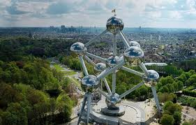
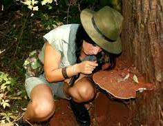
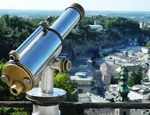
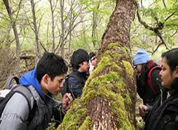

* TURISMO CIENTIFICO*
El turismo cientifico es una actividad donde visitantes participan de la genracion y difunsion de conocimientos cientificos llevandos por centros de investigacion y desarrollo se plantea como fuente entre el mundo
de las ciencias y del turismo acercando habitantes de los territorios y sus visitantes de todas las nacionalidades y culturas motivados por el avance del conocimientos humano se basa en el metodo cientifico y el avance
del conocimiento para contribuir a la compresion y resolucion de desafios ambientales y social de territorios actractivos para el turismo.

*CARACTERISTICAS DEL TURISMO CIENTIFICO*
- Son los viajes en los que se destaca la trasmision y obtencion de saberes cientifico en los destinos turisticos seleccionados.
- Es una actividad que pueden estar respaldada por algun centro de investigacion.
- Trata de buscar la mejores alternativas para distribuir los conocimientos de una forma amena y entrenida.
- Es una forma de aprovechar el turismo para acercar la ciencia a la sociendad.
- Es un tipo de turismo que resalta la intelectualidad y la educacion.
- Es una modalidad motivada por el interes y el estudio cientifico.

*ACTIVIDADES QUE SE REALIZA EN EL TURISMO CIENTIFICO*
- Participar a programas de investigacion cientificas: Se trata de una serie de actividades colectivas y coodinadas para resolver una problematica.
- Explotacion cientificas: Son expediciones de caracter cientifico para recolectar informacion de interes del ambito en el que se explota.
- Divulgar conocimientos cientificos: Es el viaje que consta en la difuncion de conocimiento cientifico a una determinacion poblacion o comunidad ceintifica..
- Observar un objeto o evento particular:Es el visita que se realiza para observar en primera persona lgun tipo de objeto o evento de interes cientifico

*EJEMPLO EN EL TURISMO CIENTIFICO*
- visitar a museo de ciencia y tecnologia.
- trasladarse a yacimientos fisilieros.
- dirigirse a sitios para onservar y estudiar eventos astronomicos.
- asistir a lugares donde se esten produciendo fenomeno naturales para estudiantes.

gomez gomez cleydi y@reni
6105 P.T.B informatica
02-05-2024